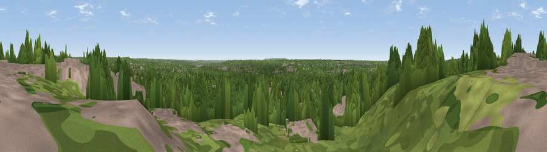

Viewpoint near Frogmore
#36636 in England · top 38% of its area beats it · near FrogmoreThe view, rendered

A 360° render of this exact spot computed from the terrain model, tree cover and land cover — summer colours, afternoon light, calibrated against photographs of famous viewpoints. Real trees, hedges and buildings will differ in detail.
The panorama
Grey silhouette: terrain skyline in each direction (720 bearings, Earth curvature and refraction included). Dashed green: skyline with trees (+15 m) and buildings (+8 m) as obstacles. Blue strip: how far the ground is visible on each bearing.
Where the view opens
Wedge length = distance to the farthest visible ground on that bearing (vegetation-aware). Rings at 10, 25 and 50 km.
What fills the view
67% woodland · 25% built-up · 7% grassland · 1% water ·
Angular shares of the visible panorama (visual magnitude), not map area. Landscape diversity 0.39 (0–1 Shannon).
Key numbers
More beautiful places nearby
The staircase of upgrades: each row has a higher view potential than everything closer. Driving times are estimates from straight-line distance, calibrated against real road routing — check an actual route before setting out.
| Place | Direction | Drive | Score |
|---|---|---|---|
| Viewpoint near Crowthorne | NNE · 1 km | ~3 min | 45.4 |
| High Curley Hill | E · 8 km | ~16 min | 49.7 |
| Viewpoint near Ewshot | S · 12 km | ~22 min | 51.4 |
| Viewpoint near Upper Hale | S · 12 km | ~22 min | 58.3 |
| Horsedown Common | SSW · 16 km | ~28 min | 59.0 |
| Viewpoint near Puttenham | SSE · 16 km | ~28 min | 62.0 |
| Viewpoint near Wanborough | SE · 18 km | ~31 min | 65.5 |
| Viewpoint near Compton | SE · 18 km | ~32 min | 66.7 |
51.35165, -0.80414 · source: screening · position refined by local search. Computed location — check access rights before visiting.